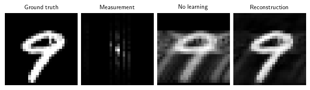
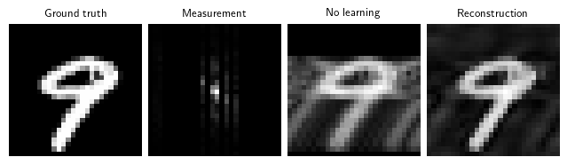

Self-supervised learning with measurement splitting
We demonstrate self-supervised learning with measurement splitting, to train a denoiser network on the MNIST dataset. The physics here is noiseless undersampled MRI.
c:\Users\s2558406\Documents\Repos\deepinv\venv\lib\site-packages\tqdm\auto.py:21: TqdmWarning: IProgress not found. Please update jupyter and ipywidgets. See https://ipywidgets.readthedocs.io/en/stable/user_install.html
from .autonotebook import tqdm as notebook_tqdm
torch.manual_seed(0)device = dinv.utils.get_freer_gpu() if torch.cuda.is_available() else"cpu"
Define loss
loss = dinv.loss.SplittingLoss(split_ratio=0.6, eval_split_input=True, eval_n_samples=5)
The model has 445378 trainable parameters
Eval epoch 0: PSNR=16.108, PSNR no learning=13.999
Test results:
PSNR no learning: 13.999 +- 1.112
PSNR: 16.108 +- 2.293

{'PSNR no learning': 13.99926462173462,
'PSNR no learning_std': 1.1116921880018424,
'PSNR': 16.108364486694335,
'PSNR_std': 2.293143492454918}
Demonstrate the effect of not averaging over multiple realisations of the splitting mask at evaluation time, by setting eval_n_samples=1. We have a worse performance:
The model has 445378 trainable parameters
Eval epoch 0: PSNR=14.354, PSNR no learning=13.999
Test results:
PSNR no learning: 13.999 +- 1.112
PSNR: 14.354 +- 2.984

{'PSNR no learning': 13.99926462173462,
'PSNR no learning_std': 1.1116921880018424,
'PSNR': 14.353833389282226,
'PSNR_std': 2.9838297099206}
Furthermore, we can disable measurement splitting at evaluation altogether by setting eval_split_input to False (this is done in SSDU). This generally is worse than MC averaging:
The model has 445378 trainable parameters
Eval epoch 0: PSNR=11.126, PSNR no learning=13.999
Test results:
PSNR no learning: 13.999 +- 1.112
PSNR: 11.126 +- 2.130
{'PSNR no learning': 13.99926462173462,
'PSNR no learning_std': 1.1116921880018424,
'PSNR': 11.126238059997558,
'PSNR_std': 2.12953882578676}